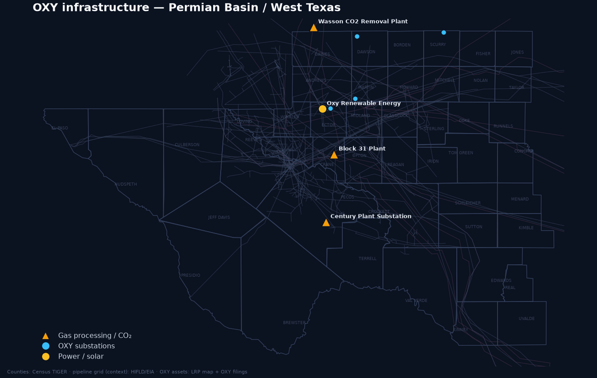

Post-OxyChem (sold to Berkshire Hathaway, closed 2 Jan 2026), Occidental reports three segments — Oil & Gas (upstream; Permian-anchored), Midstream & Marketing (incl. its Western Midstream stake), and Low Carbon Ventures / 1PointFive. The story of the last 22 months is deleveraging: net debt roughly halved and principal debt fell from the post-CrownRock peak toward a $10B target, restoring investment grade.
| Metric ($M unless noted) | FY2024 | FY2025 | Q1 2026 | FY2026 guidance |
|---|---|---|---|---|
| Net debt (total debt − cash) | 23,992 | 20,428 | 11,860 | — |
| Principal debt (OXY headline) | ~24.9B | ~15.0B | 13.3B* | target $10B |
| Cash & equivalents | 2,125 | 1,968 | 3,811 | — |
| Operating cash flow | 11,439 | 10,532 | ~2,000 | not disclosed |
| Free cash flow | 5,176 | 4,105 | 1,700** | >$1.2B incremental |
| Capital expenditure | 6,263 | 6,427 | ~1,450 | 5,500–5,900 |
| Net income to common | 2,377 | 1,647 | 3,175*** | — |
| Total production (Mboe/d) | — | 1,460 (Q4) | 1,426 | 1,410–1,460 |
| Permian production (Mboe/d) | — | ~800 (Q4) | 787 (55%) | Q2: 783–803 |
| Dividend / share (qtr) | 0.22 | 0.24→0.26 | 0.26 | growing |
*Principal debt as of 5 May 2026, down from ~$20.8B at Q3-2025; $15.6B retired over 22 months, lowest since 2019. **FCF before working capital, +52% YoY. ***Q1-2026 net income includes a ~$3.1B gain on the OxyChem sale; continuing-ops adjusted income ≈ $1.07B. OXY does not report EBITDA. Sources: OXY Q1-2026 earnings call & slides (5 May 2026); OXY Q4/FY2025 release (18 Feb 2026); FY2024/FY2025 8-Ks; rendered GAAP via stockanalysis.com tying to the 10-K/10-Q. EDGAR returned HTTP 403 to automated fetch.
| Asset → buyer | Proceeds | Closed | Use |
|---|---|---|---|
| OxyChem → Berkshire Hathaway | $9.7B cash | 2 Jan 2026 | $6.5B earmarked to debt; principal → $15.0B then $13.3B |
| Delaware upstream → Permian Resources; DJ minerals → Elk Range | ~$1.2B | Q1 2025 | 2025 debt maturities |
| Midland-Basin gas gathering → Enterprise Products | $580M | 22 Aug 2025 | Debt reduction |
| Various non-core / non-op Permian upstream | ~$370M | Apr–Jul 2025 | Debt reduction |
Berkshire's exposure to OXY has four distinct layers — an $8.5B preferred, ~83.9M warrants, a ~27% common stake, and (since Jan 2026) the OxyChem operating business it bought outright. The preferred is the structural anchor and the most misunderstood piece, so its exact terms are set out below.
| Year | Preferred redeemed (face) | Note |
|---|---|---|
| 2022 | $0 | Trigger not yet crossed |
| 2023 | ~$1.5B (+~$151M premiums) | First trigger Mar 2023 ($647M face + $65M premium); cumulative ~15% by Q3 |
| 2024 / 2025 / 2026-YTD | $0 | OXY cut buybacks (post-CrownRock) → distributions stayed below $4.00/sh → mandatory redemptions paused |
Remaining liquidation value ≈ $8.5B (carrying value $8,287M at 31 Mar 2026). OXY's stated plan, per CFO Sunil Mathew on the Q1-2026 call, is to first reach $10B principal debt, then build cash to redeem the preferred at the first penalty-free window:
Redeeming the preferred is expected to improve cash flow ~$1.2B/yr vs. 2025. Note the circularity flagged by analysts: Berkshire's $9.7B OxyChem purchase helps OXY de-lever, while Berkshire separately still holds the ~$8.5B preferred OXY will eventually redeem at 105%. OxyChem cash is going to debt, not the preferred. (Sources: OXY Q3-2023 release; Q1-2026 call/transcript, 6 May 2026; Berkshire 10-Qs via Morningstar; stockanalysis.com.)
Buffett disclaimed control again at the May 2023 meeting ("we're not going to buy control"). The 2025 letter (Feb 2026) is Greg Abel's — it treats OXY as OxyChem + an equity-method holding and disclosed a $4.5B write-down on Berkshire's Kraft Heinz + Occidental stakes. (Sources: berkshirehathaway.com/letters 2022–2025 PDFs; CNBC/Yahoo May 2023.)
OXY-owned/operated and OXY-affiliated (WES) infrastructure across the Permian, plotted on Census-TIGER county geography over the regional pipeline grid (HIFLD/EIA, shown for context — public pipeline GIS is not operator-tagged to OXY/WES, so OXY's CO₂ trunk lines are described in §4 rather than drawn).

OXY is the Permian's #1 CO₂-EOR operator, and its owned midstream is built around CO₂: the Century capture complex, the Bravo source/pipeline, and the Denver City hub that feeds its EOR floods. For gas, crude and produced water OXY now works largely through a controlling ~39.5% interest in Western Midstream (WES), having sold its conventional Midland gathering to Enterprise in 2025. Each asset is profiled below.
The flagship in-county asset: a billion-dollar CO₂-capture/gas-treating complex physically in Pecos County, projected at announcement to add up to ~50,000 boe/d to OXY's Permian EOR within five years.
Sources: Oil & Gas Journal (start-up); SandRidge release 30 Jun 2008; MIT Sequestration; GEM. ‘800 MMcf/d’ = inlet treating; ‘~450 MMcf/d’ = CO₂ takeaway — different metrics.
Previously the thinnest profile, now fully resolved through the public facility databases: EIA-757 capacity (41 MMcf/d), EPA GHGRP emissions (115,965 t CO₂e, 2023), RRC production (344 wells), and the TCEQ/UIC permit stack — a 1952-vintage Devonian CO₂ flood OXY still operates.
Sources: EPA Envirofacts GHGRP (facility 1001132); EIA-757 (NGPP480657); RRC PDQ / shalexp (Block 31 Unit; OXY P-5 630591); TCEQ Permit 73238 notice (2025).
The Denver Unit is the reason the CO₂ network exists: ~27,000 acres of San Andres flood consuming hundreds of MMcf/d of CO₂, the original 1984 destination for McElmo Dome CO₂.
Sources: EPA Wasson San Andres MRV report (2023); GEM CO₂-EOR; Oil & Gas Journal EOR surveys.
Not a single OXY-owned asset but the grid node that ties OXY's CO₂ supply (Cortez purchases + owned Bravo + owned Century capture) to its EOR demand.
Sources: Kinder Morgan CO₂ operations; GEM; Oil & Gas Journal.
OXY's owned, operated natural-CO₂ supply — the equity counterweight to its purchased Cortez volumes. ~99% purity feeds the Bravo line south into the Texas Permian.
Sources: GEM Bravo Dome; 350SantaFe; Oil & Gas Journal. (Deeper field metrics pending a re-run that was rate-limited.)
OXY's owned CO₂ trunkline — distinct from (and parallel to) the Kinder Morgan-controlled Cortez line. 218 miles of 20-inch pipe at 382 MMcf/d.
Sources: GEM Bravo Dome; Kinder Morgan CO₂.
A common point of confusion, corrected here: Cortez is Kinder Morgan-operated and OXY holds no equity — OXY draws McElmo Dome CO₂ off it as a customer at Denver City, while owning the parallel Bravo system. OXY-specific Cortez offtake volumes are not disclosed.
Sources: Oil & Gas Journal (1983 build; 2000 Shell–KM sale); Kinder Morgan CO₂; Four Corners Free Press; Shell Cortez Pipeline Co. v. Shores (Tex. App. 2004); DOE QER 2015.
The clearest recent example of OXY shedding conventional midstream to cut debt while locking in long-term gas takeaway — owner becomes customer.
Sources: Enterprise/BusinessWire 6 Aug 2025; Rigzone 27 Aug 2025; OGJ.
The processing counterpart to the Enterprise gathering sale: OXY's associated gas flows here under a long-term deal, securing takeaway without OXY owning the plant.
Sources: Enterprise/BusinessWire 6 Aug 2025; TCEQ permit (OilGasLeads, Oct 2025); EPD Q1-2026 slides 28 Apr 2026; Rigzone.
The single biggest nuance in OXY's midstream: it no longer owns ~half of WES. The current figure is ~39.5% total / 38.3% of common units (Feb-2026 13D/A), but OXY still controls WES through the GP. A full sale remains possible.
Sources: WES FY2025 10-K (filed Feb 2026); SEC 13D/A (Jan 21 & Feb 5 2026); WES Q4-2025 slides (18 Feb 2026); Reuters (Feb 2024 sale exploration).
A concrete near-term WES expansion: 250 MMcf/d live, another 300 MMcf/d in 2027 — part of the ~$850M–$1.0B 2026 WES program funding North Loving II and Pathfinder.
Sources: NGI; PB Oil & Gas Magazine; WES Q1-2026 slides.
The Permian produced >20 MMbbl/d of water in 2024 (~3.5:1 water-to-oil), heading past 26 MMbbl/d by 2030. OXY's own total volume is not disclosed; its water runs through (a) a named Select Water recycling partnership and (b) Western Midstream's large produced-water system (incl. Aris). Seismicity-driven disposal curtailment is the structural push toward recycling and, increasingly, desalination. Each asset below.
OXY's flagship Midland recycling site — a direct hedge against disposal curtailment, cycling tens of millions of barrels back into frac operations. Daily capacity is undisclosed; Select confirms the Martin County location.
Sources: Select Water Solutions releases 20 May 2024 & 28 Apr 2026; Martin Co. confirmed in Select 12 Feb 2025 release; Hart Energy.
OXY's largest disclosed recycling capacity (up to 180k bbl/d), purpose-built to feed the Mesa Verde development via a dedicated 13-mile line.
Sources: Select Water Solutions release Sept 2024; selectwater.com.
OXY's exposure to Permian produced-water desalination is indirect — through its ~40% stake in WES, which runs this joint-industry pilot with four other majors. OXY is not itself a named JIP partner. The program is the bridge to a first commercial-scale desal facility.
Sources: WES release 17 Jun 2026; SEC EDGAR full-text (desal/JIP appear only in WES M&A exhibits, not periodic filings); WES Q1-2026 call; TxPWC 2024.
The transformational water deal: a $2B bolt-on that roughly doubled WES's water platform and added desalination/beneficial-reuse expertise — OXY participates through its ~39.5% WES interest.
Sources: WES releases 6 Aug & 15 Oct 2025; WES FY2025 10-K; Bluefield Research; RBN Energy.
A sanctioned, OXY-anchored water trunkline addressing the binding constraint in the Delaware: induced-seismicity limits on deep disposal. OXY's firm MVCs underwrite it.
Sources: WES release 26 Feb 2025; SEC 8-K EX-99.2; East Daley Analytics 20 Mar 2025; WES Q1-2026 slides.
Important scope boundary: all concrete TerraLithium activity is California geothermal brine, at demonstration stage. The widely-repeated ‘50/50 JV, June 25 2024’ is wrong — it is a jointly-formed venture announced June 4 2024 with an undisclosed split.
Sources: OXY release 4 Jun 2024; terralithium.com; Reuters/Mining-Technology; LBNL (Dec 2023); CA Gov. office. (Integrity note: a PDF auto-summary hallucinated quotes; only cross-corroborated wire text used.)
OXY is mainly a large power consumer — CO₂-EOR compression and DAC are electricity-intensive — and builds decarbonized self-supply: solar for its own operations, plus a controlling-influence equity stake in NET Power (carbon-capture-on-gas). The OxyChem cogeneration left with the Jan-2026 sale. Each asset below.
Small but strategically symbolic: OXY's first solar farm, built to power its own Permian EOR rather than for merchant sale.
Sources: OXY release (Oct 2019); EIA-860; Power Technology.
OXY's largest renewable project — a 265 MW solar build in South Texas, co-located with the King Ranch DAC hub and very likely intended to power it.
Sources: ERCOT interconnection queue; LRP map data (developer = Oxy Renewable Energy LLC).
Dedicated renewable supply for the STRATOS DAC plant — the power-intensity of DAC is exactly why OXY pairs each project with contracted solar.
Sources: Origis Energy / 1PointFive disclosures.
The centerpiece of OXY's power-plus-CCS strategy and its most-changed story: as of March 2026 the flagship Odessa plant is no longer a 300 MW Allam-cycle unit but an 80 MW Siemens+Entropy PCC plant. OXY's 46.46% stake, host site and CO₂-offtake role persist; the ‘CCS-on-gas for data centers’ template is real in concept but has no named hyperscaler contract yet.
Sources: NET Power YE-2025 business update (9 Mar 2026); RONI/NPWR merger S-4 (June 2023); POWER Magazine; E&E News; Energy Intelligence (46.46%).
Included only to be complete: the two OxyChem cogeneration plants transferred to Berkshire with the $9.7B chemicals sale and are no longer OXY's.
Sources: OXY/Berkshire OxyChem releases (Oct 2025 / Jan 2026).
Right-sized: direct air capture is barely economic today — subsidy- and premium-buyer-dependent — so it is profiled but not emphasized. 1PointFive is OXY's wholly-owned DAC subsidiary (built on Carbon Engineering technology, acquired ~$1.1B, closed Nov 2023).
The world's largest DAC plant, commissioning in 2026 with first-ever DAC Class VI permits — but per-tonne cost is undisclosed and, like all DAC, depends on 45Q + premium buyers.
Sources: 1PointFive/OXY & BlackRock releases; Texas Tribune 8 Apr 2025; Worley.
The hub behind OXY's DAC scale ambition — DOE- and ADNOC-backed, with 3 billion tonnes of estimated storage, still pre-construction.
Sources: 1PointFive hub page; DOE OCED; OXY/XRG release (May 2025).
DAC costs ~$385–690/t today (WRI avg ~$490/t). 45Q pays $180/t (DAC+saline), $130/t (DAC+EOR), $85/t (point-source). Voluntary durable-CDR runs ~$200–350/t. The ~$220–420/t gap closes only by stacking 45Q with top-of-market voluntary buyers — hence "barely economic." Verified 1PointFive CDR buyers: Microsoft 500,000 t (Jul 2024), Amazon 250,000 t (Sep 2023), Airbus 400,000 t (Mar 2022), JPMorganChase 50,000 t (Jun 2025), All Nippon Airways 30,000 t, TD 27,500 t, BCG 21,000 t, Palo Alto Networks 10,000 t, Bain 9,000 t, plus AT&T · Trafigura · Astros · NYK (undisclosed). SK Trading is excluded — it is a "net-zero oil" deal, not carbon removal.
Sources: 1PointFive releases; WRI/IEA DAC cost estimates; World Oil (Microsoft).
Public-source profiles (company/1PointFive press, SEC, conference and legislative records, professional directories). LinkedIn/ZoomInfo/RocketReach block automated retrieval, so dated role-by-role timelines and credentials sit behind those walls; confidence is marked and gaps are flagged rather than filled.
Role (confidence: high). Surface-land leader at OXY, based in Katy, Texas (rendered "Surface Land Manager" / "Director, Surface Land" across directories). Scope is the surface side of the land department — surface-use agreements, surface-damage settlements, rights-of-way, easements and landowner relations across OXY's operated footprint.
Strongest primary data point. In the 86th Texas Legislature (2019), Woest appears on the official witness list for Senate Bill 421 (the Kolkhorst eminent-domain reform bill) before the House Committee on Land & Resource Management, registered "Against," representing Occidental Petroleum (capitol.texas.gov, 25 Apr 2019). This independently confirms his OXY employment as of 2019 and a remit centered on pipeline/right-of-way and condemnation policy — squarely the surface-land function.
Gaps (flagged). A possible Anadarko tenure (plausible given OXY's 2019 acquisition) could not be verified in any public source. Education, certifications (e.g., AAPL CPL/RPL) and prior employers were not found — they sit behind blocked LinkedIn. Sources: TheOrg; Wiza; Texas Legislature SB 421 witness lists (2019).
Role (confidence: high; spelling resolved — "Cranfill," not "Cranifill"). Houston-based; per his bio, "over 16 years of experience," responsible for securing anthropogenic CO₂ offtake supply agreements and optimizing OXY's upstream oil & gas portfolio — a dual commercial mandate bridging conventional upstream and the CCUS/carbon-management business. Skills listed: M&A, CCUS, EOR, net-zero strategy.
Career (confidence: medium). Reservoir Engineer, Deepwater Gulf of Mexico, Hess Corporation (~2008–2012); Senior Reservoir Engineer, Permian Primary Non-Operated JVs, Occidental (~2012–2013); thereafter progressing into business development and carbon management. Education (confidence: high on institutions): B.S. Petroleum Engineering, The University of Texas at Austin; professional certificate in CCUS, University of Houston.
Deal association. His function is the commercial engine behind 1PointFive's anthropogenic-CO₂ offtake/supply agreements (the category that includes the 25-year CF Industries sequestration agreement and the 2022 EnLink CO₂ LOI), though no release names him personally on a specific signed deal — attribute to function, not a single transaction. No patents/papers found. Sources: TheOrg; Wiza; 1PointFive/EnLink releases.
Disambiguation (high). This is the Greater-Houston oil-&-gas Jeff Noto at OXY — not the Jeff Noto who is CFO of Zayo Group (a different person; exclude telecom/finance material).
Role & career (confidence: medium). Land Team Lead at OXY, supervising negotiation and administration of oil-&-gas (and carbon-storage) property rights — leasing, surface/subsurface agreements, title, division-order and regulatory coordination. Prior: Senior Land Negotiator at Oxy Low Carbon Ventures (OLCV) — directly tied to OLCV's 2021–22 pore-space/CO₂-sequestration land assembly (e.g., the Gulf-Coast hubs and the >30,000-acre Louisiana pore-space and Weyerhaeuser CCS leases, attributable to the function not a named-personal deal). Earlier, multiple roles at Sheridan Production Company (Division Order Analyst, Land Tech III, Landman, Supervisor–Regulatory) — a classic landman trajectory.
Gaps (flagged). Education, certifications and dated timeline not found (behind blocked LinkedIn/ZoomInfo). Sources: ZoomInfo & LinkedIn headline snippets; Hart Energy; 1PointFive Louisiana CCS release.
Each item below is flagged because it is either not publicly disclosed, recently changed, or commonly mis-stated — and each is material enough that relying on a wrong version would mislead.